Projects
College Projects
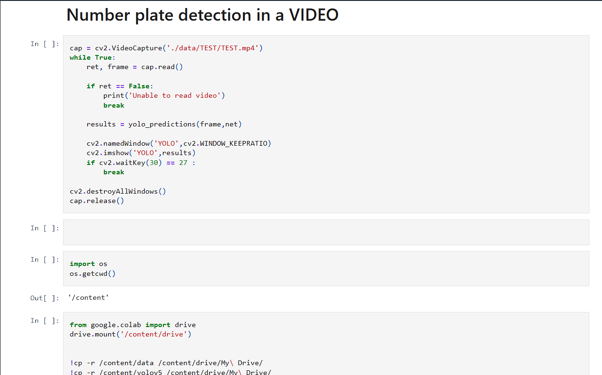
Number Plate Detection
- Created a deep learning model to detect and extract text from vehicle number plates.
- Trained using YOLO for high-accuracy detection and text extraction.
- Application: Traffic control, surveillance, and stolen car tracking.
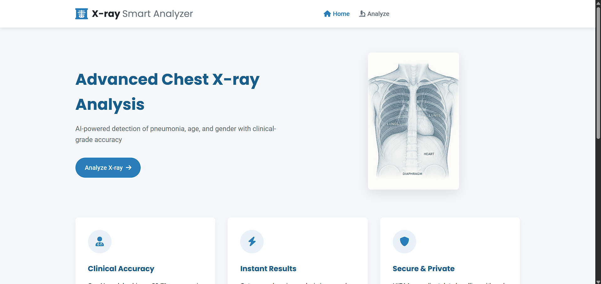
Chest-X-ray-Analysis-System
- Designed CNN based deep learning model to predict age, gender, and pneumonia disease.
- This application generates a report pdf in which written about the prediction from chest X-ray image.
- Deployed using Flask for real-time predictions.
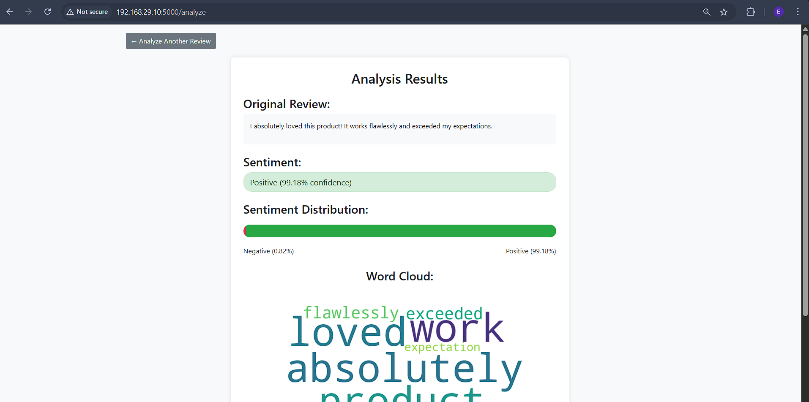
Sentiment Analysis on Amazon Reviews
- Built a flask application to text classifier using scikit-learn and NLTK to identify review sentiment.
- Achieving 87% accuracy to predict the given review is positive or negative.
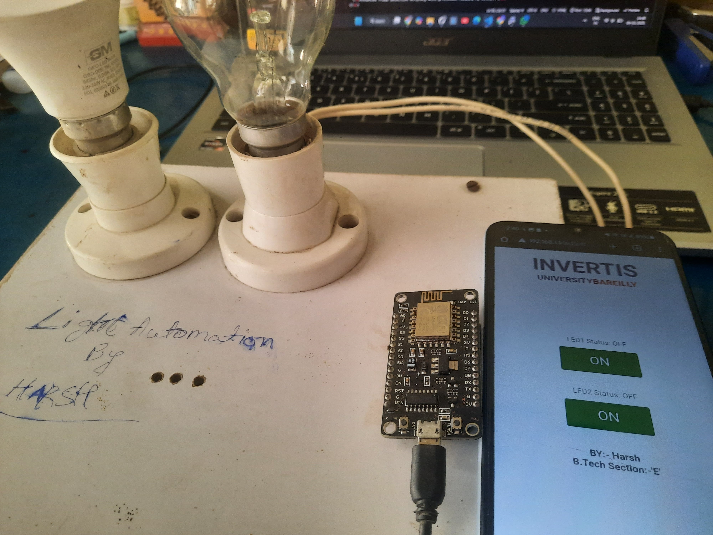
Light Automation with Mobile Control
- Developed an IoT-based system to control lighting via a mobile device using ESP8266.
- Built a web interface for smart lighting control over WiFi.
Other Projects
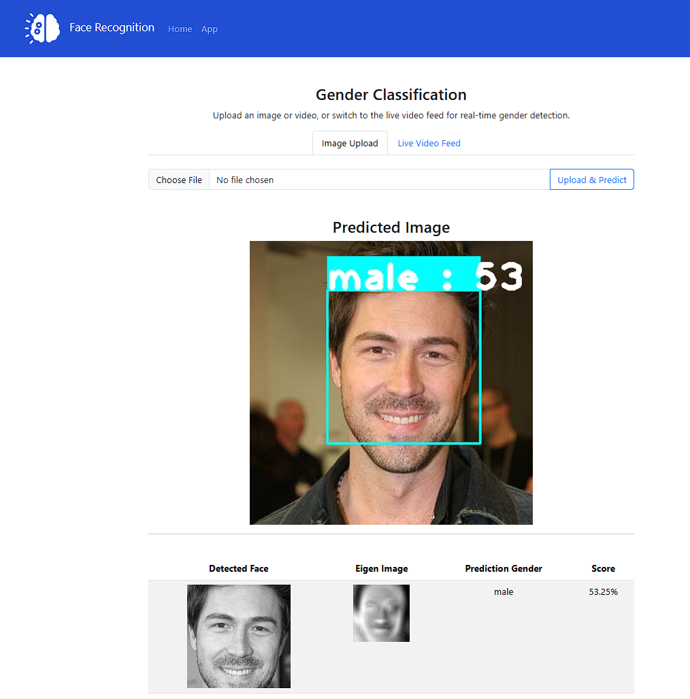
Gender Classification App
- Developed a machine learning model for gender classification based on images.
- Used OpenCV and Flask for image processing and web deployment.
- Applied Principal Component Analysis (PCA) to extract eigenfaces for classification.
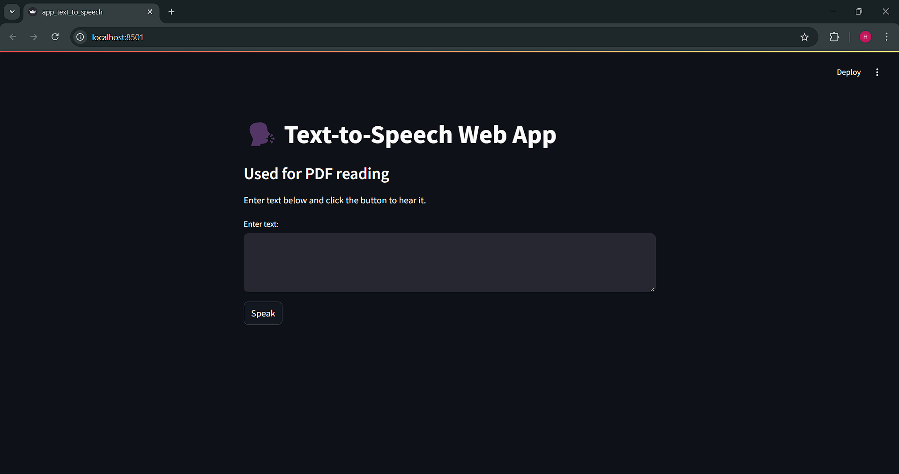
Text To Speech
- Turn any text into speech with ease using this Text-to-Speech Web App built with Streamlit, gTTS, and Pygame! 🖥️🔊
- ✨ Features:
- Instant text-to-speech conversion
- Play audio directly in the app
- Download the speech as an MP3 file
- Perfect for PDF reading, accessibility tools, and learning applications!
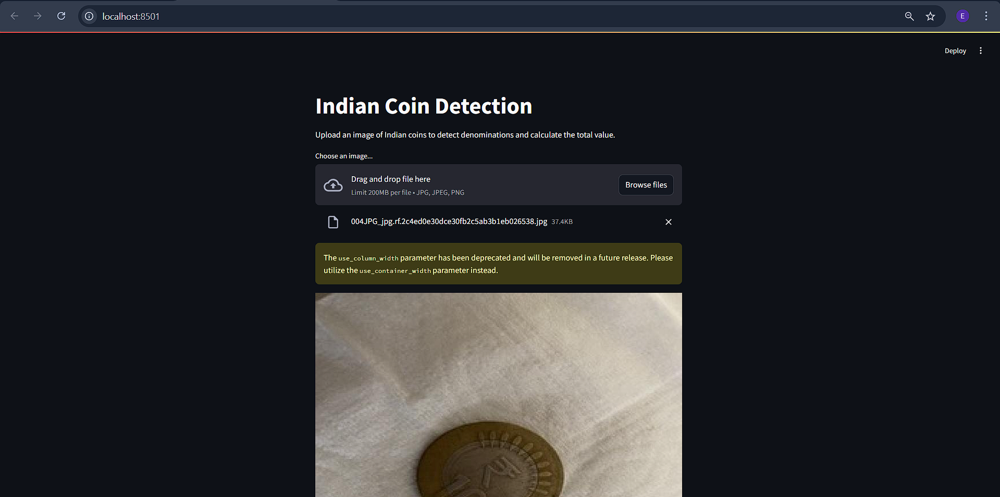
Indian Coin Detection
- This project uses YOLOv8 to accurately detect and classify Indian coins from images in real time. 🚀🔎
- ✨ Features:
- Detects various Indian coin denominations 🪙
- Works with images & live camera input 📸
- Fast & accurate deep learning-based detection ⚡
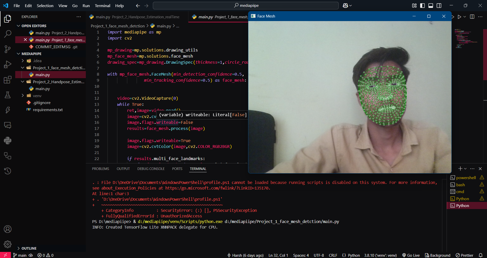
Facemesh Detection
- Developed a real-time facemesh detection system using the MediaPipe library in Python.
- ✨ Features:
- Detects facial landmarks and mesh in real-time.
- Works with live camera input and images.
- Lightweight and efficient for real-time applications.
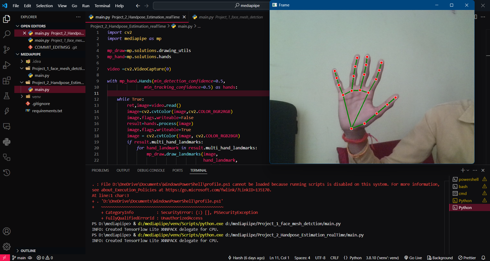
Handmesh Detection
- Built a real-time handmesh detection system using the MediaPipe library in Python.
- ✨ Features:
- Detects hand landmarks and mesh in real-time.
- Works with live camera input and images.
- Lightweight and efficient for real-time applications.
Internship Projects
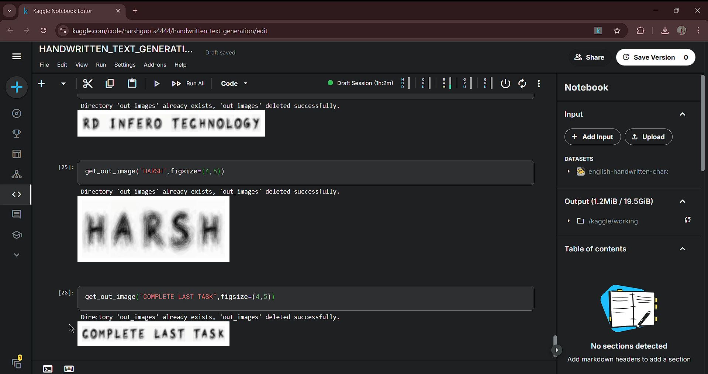
Handwritten Text Generation
- Implemented a character-level recurrent neural network (RNN) to generate handwritten-style text.
- Trained on a dataset of handwritten samples to learn writing patterns.
- Generated synthetic handwritten text for digitization and OCR applications.
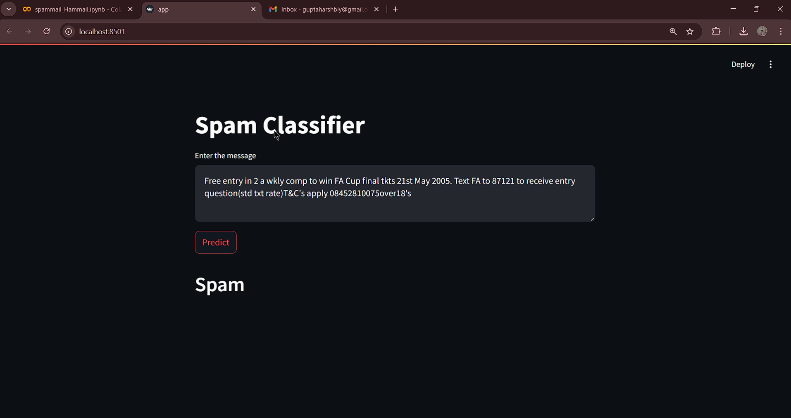
Spam vs. Ham Mail Classification
- Built an NLP-based model to classify emails as spam or ham.
- Utilized TF-IDF vectorization and deep learning techniques for accurate detection.
- Improved email filtering efficiency to prevent spam.
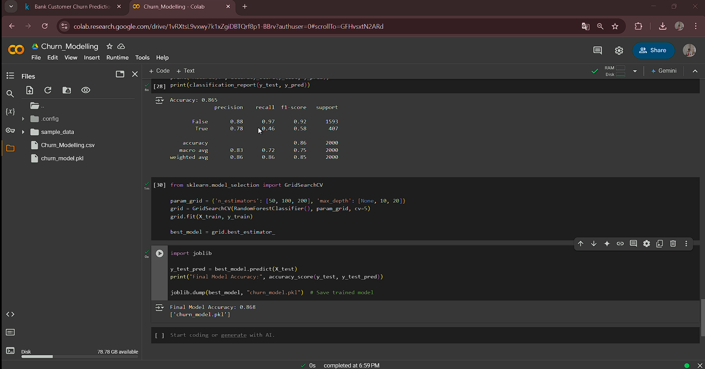
Bank Customer Churn Prediction
- Developed a predictive model to identify customers likely to leave the bank.
- Analyzed customer behavior patterns using machine learning.
- Helped banks retain customers with targeted strategies.
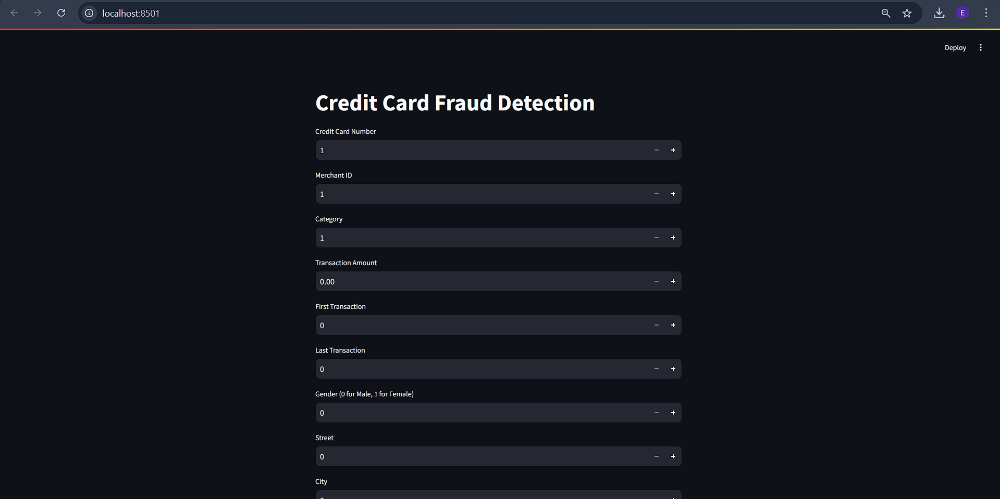
Credit Card Fraud Transaction Prediction
- Designed an anomaly detection model to identify fraudulent transactions.
- Used oversampling techniques (SMOTE) to handle data imbalance.
- Enhanced fraud detection accuracy with precision-focused ML models.
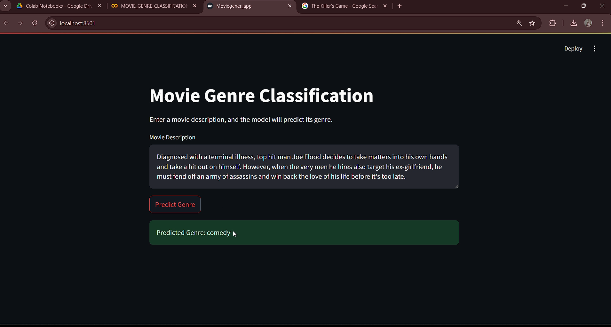
Movie Genre Prediction
- Built a classification model to predict the genre of a movie based on its metadata.
- Extracted key features like director, actors, and plot description.
- Improved recommendation systems using NLP and machine learning.